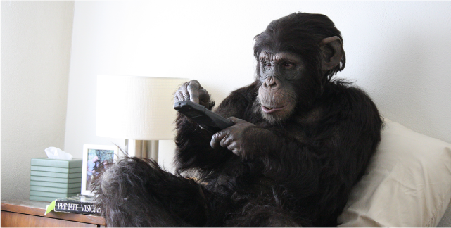
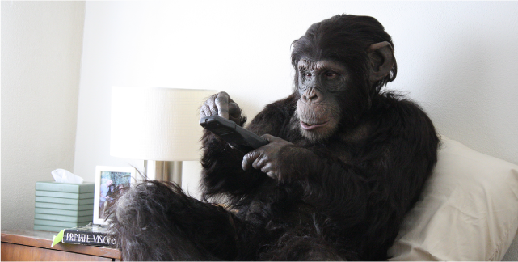

Here, “half-and-half” may refer to equal halves of a larger entity or an unknown equilibrium. If we calibrate the relationship between humans and machines on a scale of zero to one hundred, every single point at which we may achieve equilibrium is a variation. How do we build a balance that is symbotic? With a main exhibition and a curated series of programs, this year’s festival leads visitors to “dream,” a dream in which we assimilate, think, rehearse, and learn about future life. We see our imminent possibilities when navigating between reality and imagination. In Art of War, Sun Tzu writes that the best course of attack is to understand: If one knows the enemy and oneself, one need not fear a hundred battles. This is not to say that technology and artificial intelligence (AI) are the antagonists of humankind, but it is wise, surely, to also learn more about the capabilities of a friend, ally, partner. We also need to know ourselves before we know others. In The Storytelling Animal: How Stories make us Human, Jonathan Gottschall stipulates that man are creatures of storytelling. Even for a singular text, with people’s imagination, a tale can unfold in infinite ways that entertain and also teach people to face difficulties and live bravely. Through stories, people learn to self-heal, destress, and relieve their emotions. Using the language of escape rooms, artist duo Laia Cabrera and Isabelle Duverger explore reality and fantasy in Dream-e-scape, bringing visitors into an immersive lucid dream. Contrary to the idea that dreams are just dreams, the line between the real world and the imaginary world is often blurry. If an immersive installation is a form of lucid dreaming, a VR device is the start of a personal journey into the virtual realm. Jakob Kudsk Steensen’s RE-ANIMATED is a reconstructed environment in the form of a paradisal garden, a habitat for the extinct Kaua’i ʻōʻō bird. The landscape is made from realistic geographic and ecological data as it examines the interstices between extinction, conservation, and immortality through artistic experience.
Having learned more about ourselves, we move on to learning more about others. Discussions about art and technology tend to involve a lot of technical discourse, but what exactly are their implications? Rather than focusing on the rapidity of scientific development and the changes its interventions introduce to the world, we are more interested in how we should face our imminent future. Last year, the festival presented a video work about human-machine interaction, which ends with the phrase “Co-AI-existence”—AI being the acronym for artificial intelligence but also the transliteration for love from Mandarin. We continue this line of inquiry in this year’s edition; if humans and machines are to co-exist, we might as well get to know each other well. Design studio Ultravioletto believes that AI is capable of replicating human thought to grow and respond to their environments by understanding and inference. If AIs can read us like a book, how do we in turn comprehend them? In Neural Mirror, the viewer looks at their reflection in a mirror but sees themselves as moving data points, a perspective more attributed to AIs, who observe the world as masses of data, than humans, who rely primarily on sight. How do we reconcile these differences? Some may consider technology insentient and AI to be mere machines, but they already assume distinct personas in our lives in the forms of Alexa, Siri, and the virtual assistant from the movie Her, a woman who eludes touch and captivates by voice alone. Everyone gets a virtual assistant MOA in Charles Ayats’s My Own Assistant, which brings us to an interactive augmented reality set in a future world. Your story with your MOA quickly unfolds, just between the two of you… If sound isn’t enough, might adding video hit the spot? Futurist Ray Kurzweil predicts technological singularity—that is, when AI surpasses humans—to occur by 2045. By then, not all forms of AI will survive, and some will be inevitably eliminated. Greek artist Kyriaki Goni’s video work Not allowed for algorithmic audiences compiles research on AI development and voice interfaces to create a fictional narrative. In a monologue, an AI assistant who is about to disappear teaches humans how to avoid being heard by algorithms. In these universes, is the relationship between humans and machines for better or for worse? Do we fight with or against each other?
神話說人類曾經是完整一體的，那時的人類擁有很強的力量，因為驕傲而去挑戰宙斯，宙斯是古希臘神話中統領宇宙至高無上的天神﹐祂一怒之下讓雷神把這些人劈成兩半，然後說：去找你的另一半 (Go find your other half)，神仙把這些被劈開的人們放在世界各地，使他們分離、讓他們忘卻另一半的容貌，生世找尋，期望有天能在合一時變得強大。這是神話，在許久以前就口耳文本流傳下來，然而除了神話我們也有古希臘語：τέχνη + -λογία，意為「技巧學說」，也就是科技 (Technology) 的始源字，這兩者之間似是毫無關聯，然而如果以錄像藝術之父白南準其中一段預視名言來解讀就能看見箇中連結。他說：
「我們的生活一半是自然一半是科技，一半半是好的，你不能否認高科技是一種進步，我們需要它來創造就業機會，然而如果你只製造高科技，你就會製造戰爭，因此我們必須保留強大的人性關聯，以保持謙虛和自然的生活。」
這裡談的「一半半」可以是對半也可以是一個未知的平衡 (Equilibrium)，怎麼加起來都是一百，但左推右佔下呈現的是變數，在拿捏平衡點的過程中，人與機的互惠共生是如何被建立的呢？今年藝術節期望通過精選的展品及節目與觀眾「造夢」，在「夢」中吸收、思考與推演、學習未來生活，嘗試遊走在虛實之間，然後看看近未來的可能性。語本《孫子・謀攻》言道：知彼知己者，百戰不殆；雖不是要視科技/人工智能是對手，但了解自己、隊友、伙伴的實力其實也是萬應之策吧。知彼之前先知己，讀哥德夏的《故事如何改變你的大腦》 (The Storytelling Animal: How Stories make us Human) ，他告訴我們人類是善長故事的生物，即便文本是死的，但透過人的想像力活化就可成無限，透過故事的曲折離奇人們學習如何面對困境如何勇敢生存、獲得樂趣外，還可以訓練自我療癒的能力、釋放壓力和紓解情緒。藝術組合萊亞・卡布蕾拉及伊莎貝拉・杜維格 (Laia Cabrera & Isabelle Duverger) 在《夢景觀》中運用了逃生室的語言去探索虛實，讓觀者醒著入夢，實戰現場。然而談到虛
 

Chimpanzees in captivity watch television as a form of enrichment. But no one had made a film expressly for a chimpanzee audience. Could we learn something about their mentality by what appeals to them? Primate Cinema: Apes as Family shows an original drama for chimps and the simultaneous reactions of the chimps watching it, side by side as a two-channel installation.
I began by making and showing a variety of footage to chimps at the Edinburgh Zoo in collaboration with primatologist Sarah Jane Vick: drumming, cooking shows, cartoons, documentaries of wild chimps, people with masks on. Unsurprisingly, chimps like to watch chimps most of all. They also have a very short attention span. I wrote a screenplay features variety, spectacle, and a thrumming soundtrack, with primate dramas around sex, food, hierarchy, and territory. The story follows an adolescent female chimp who, like chimps in the wild, must leave her family home and make friends in a strange, new community. “Carla” is played by a human actor in a realistic costume, whose facial expressions were puppeted animatronically. An enculturated chimp, Carla is used to living in a house, but she meets fake chimps who try to teach her to be wild.
The ape feature premiered in a chimp-proof monitor in the greenery of the zoo as well as in an indoor research pod, which chimps could access voluntarily. Throughout the project, we learned how chimps' individual personalities and upbringings -- in labs, zoos, or in the wild -- affected their responses to television.
人工飼養的黑猩猩會把看電視作為娛樂的一種，但沒有人為黑猩猩觀眾製作過電影電視。那我們是否可以從吸引黑猩猩觀眾的內容去了解牠們的心理呢？靈長類動物電影院：《猩猩一家親》以雙頻度錄像裝置形式展現，呈現為黑猩猩製作的原創戲劇以及黑猩猩觀眾觀看時的同步反應。
一開始我與靈長類動物學家莎拉・簡・維克（Sarah Jane Vick）合作，在愛丁堡動物園為黑猩狠觀眾製作並播放各種影片，內容包括擊鼓、烹飪節目、動畫、野生黑猩猩紀錄片、戴面具的人等。如我們所料牠們最愛看同類表演，並發現牠們的注意力都很短暫。於是我寫了一個電影劇本，場面壯麗，配樂激昂，內容豐富精彩，主題圍繞著性、食物、制度以及領地。故事講述一只青春期的雌性猩猩「卡拉」，和野生猩猩一樣，她必須要離開自己的家，到一個陌生的新社區去交朋友。卡拉由一名穿著逼真服裝的人類演員所扮演，其面部表情由動畫控制。卡拉是一只受過文化薰陶的黑猩猩，她習慣了在房子裡生活，但她遇上了試圖導她轉野的假黑猩猩。
作品於動物園的綠園地以及室內研究艙以防護電視進行首播，黑猩猩可以自由進出。在整個項目中我們了解到黑猩猩的個性以及成長經歷，無論是在實驗室、動物園還是野外，是如何影響牠們對電視的反應。
Rachel Mayeri is an LA-based artist working at the intersection of art and science. Her videos, installations, and writing projects explore topics ranging from the history of special effects to the human animal. Commissioned by Arts Catalyst and receiving a major award from The Wellcome Trust, she created a film expressly for chimpanzees – Primate Cinema: Apes as Family, which subsequently showed at Sundance, Berlinale, and Ars Electronica. Currently she is at work on a project about the R/P FLIP, a Cold War research vessel built to rotate 90 degrees to study waves and sonar, as part of Getty’s Pacific Standard Time 2024: Art & Science Collide. A professor at Harvey Mudd College, she teaches courses such as Animal Media Studies and Art & Biology.
瑞秋・梅耶里是一位來自美國洛杉磯的藝術家，從事藝術與科學交互領域的工作。她的錄 像、裝置以及寫作項目探討了從特效歷史到人類動物的各種主題。受藝術組織 Arts Catalyst 的委託，並獲得 the Wellcome Trust 基金會的重要奬項，她創作了這部為黑猩猩觀眾而製作的電影；靈長類動物電影院：《猩猩一家親》。作品隨後於電影節 Sundance、 Berlinale 以及藝術節 Ars Electronica 放映。目前她正在進行一個 R/P FLIP 的項目 – 這艘冷戰時期的研究船可以旋轉90度來研究海浪和聲納，是《Getty’s Pacific Standard Time 2024: 藝術與科技碰撞》計劃的一部分。她是哈維馬德學院的教授，授課科目包括動物媒體研究、藝術與生物學等。
How can we see under the surface – and get inside of soil?
Belonging to Soil is an art installation and virtual reality experience based on a critical ecological reality. The intricately interwoven ecosystem of soil contains billions of tiny creatures that our lives depend upon. How can we meet our friends who are doing the important work of absorbing waste and transforming it into healthy fertilizer that feeds the plants, which feed animals, like us? How can we see and experience these fascinating creatures who have complex, symbiotic relationships with each other?
This virtual reality experience Belonging to Soil is a simulation of the world of a springtail, a tiny creature living in soil ecosystems throughout the world. You inhabit the body of this arthropod avatar so you can travel as it does; riding on a flying ant to find new territory, leaping through the air to escape predators, swimming in a pond to catch and eat water bears, crawling underground to see the beauty there, exploring tunnels made by worms, eating sporulating soil bacteria, feeding plant roots, and dancing with friends.
Since a simulation can never live up to the complexity of the actual creature, we found that it was important to bring them into the gallery so they could represent themselves. They are the size of a pinhead, which makes it challenging to notice at first; so a video microscope was used to capture and broadcast their lively movements on a large monitor for visitors to observe. Small terrariums – dubbed “sub-terrariums” – are on display next to the monitor for further, close observation.
Belonging to Soil creators: Amy Youngs (Artist), Shadrick Addy (Designer), Mayen McClain (3D Environment Artist), Luke Stephens (3D Character Designer), JT Thrash (Lead Programmer), Andrew Sanchez (Programmer), Josh Rodenberg (Musician), William Yuan (3D Artist) and Megan Wright (Designer).
我們如何能夠看到土壤表層以下，並進入土壤的內層？
《塵歸塵土歸土》是一件建基於重要生態現況、配有虛擬實境體驗的藝術裝置。錯縱複雜的土壤生態系統中包含著數十億人類賴以生存的微小生物，我們要怎樣才能看見這些「朋友」呢？它們正做著重要的工作，吸收廢物並將之轉化成健康的肥料，為植物提供營養，而植物又為動物提供養料。我們要怎樣才能看到和體驗彼此間有著複雜共生關係的迷人生物呢？
虛擬實境體驗《塵歸塵土歸土》模擬了一種生活在世界各地土壤生態的微小生物 – 跳蟲的世界。你可以居住在這種節肢動物化身的身體裡，像它一樣遊走；騎在飛蟻上找尋新領地，在空中跳躍躲避捕食者，在池塘裡游泳捕食水熊蟲，在地上爬行欣賞美景，探索蟲蟲建造的隧道，吃土壤中的孢子細菌，餵養植物根系，與朋友共舞。
由於模擬永遠無法與真實生物的複雜性相比，我們發現將之帶入展覽空間，讓它們表現自己是十分重要的。它們就只有針頭的大小，一開始很難被注意到；因此我們使用了影像顯微鏡來捕捉它們活潑的動作，並在大型顯示器上播放，供觀者觀察。在旁邊置放了被稱為「子溫室」的小型溫室則讓觀者可以進一步近距離觀察。
創作者：艾米・揚斯（藝術家）、沙德黑克・阿迪（設計師）、馬仁・麥克萊恩（3D環境設計）、路克・史蒂芬斯（3D角色設計）、JT激流（首席編程）、安德魯・桑切思（編程）、喬希・羅登伯格（音樂）、威廉・袁（3D動畫）、梅根・萊特（設計師）
Amy M. Youngs creates eco art, interactive sculptures, and digital media works that explore entanglements between technology, plants, and animals. Her research involves empathy, relationships with non-humans, ecosystem construction, and seeing through the eyes of machines. She has created installations that amplify the sounds of living worms, indoor ecosystems powered by a rocking chair, an interactive museum for live insects, and an augmented reality tour of real nature. Her works have been exhibited widely, at venues such as the Te Papa Museum in New Zealand, the Trondheim Electronic Arts Centre in Norway, the Peabody Essex Museum in Salem, MA, and the public parks in New York City. Youngs has earned an Individual Artist Grant from the Ohio Arts Council, has contributed writing to interdisciplinary publications such as Leonardo Journal, and the book Robots and Art, and she has lectured at venues such as the Experimental Media and Performing Arts Center (EMPAC) at Rensselaer Polytechnic Institute, in Troy, NY, the Australian Centre for the Moving Image in Melbourne, Australia and the Walker Art Center in Minneapolis, MN. She earned an MFA from the School of the Art Institute of Chicago and a BA from San Francisco State University. She is currently an Associate Professor of Art at the Ohio State University, where she collaborates on interdisciplinary projects and teaches courses in digital media, art & science, and eco art.
艾米・揚斯專注創作生態藝術、互動雕塑及數位媒體作品，探索科技、植物和動物之間的糾結關係。她的研究涉及同理心、與非人類的關係、生態系統建設以及用機器的眼睛看世界。她曾創作過放大活蟲的聲音裝置、由搖椅驅動的室內生態系統、活體昆蟲互動博物館以及真實大自然的擴張實境之旅。她的作品曾於新西蘭的蒂帕帕博物館、挪威的特隆赫姆電子藝術中心、馬薩諸寒州塞勒姆的皮博迪㶼塞克斯博物館和紐約市公共公園等地展出。艾米曾獲俄亥俄州藝術委員會頒發的個人藝術家奬金，並為跨學科刊物《LeonardoJournal》、書籍《機器人與藝術》等撰稿，還曾於紐約州特洛伊市倫斯勒理工學院實驗媒體與表演藝術中心（ EMPAC ）、澳洲墨爾本移動影像中心和明尼蘇達州明尼阿波利斯沃克藝術中心等地舉辦講座。她擁有芝加哥藝術學院的藝術碩士學位及舊金山州立大學的文學學士學位。她目前是俄亥俄州立大學藝術副教授，主責跨學科項目的合作，並教授數位媒體、藝術與科學以及生態藝術等課程。
Biolum is a cinematic PC-VR experience that thrusts the user into the role of RACHAEL, an experienced diver exploring the abyss, guided by expedition leader EVA, a renowned marine scientist and mentor. Rachael discovers that luminescent parasites are infecting ocean flora and fauna. She gets infected herself and faces a mesmeric fight for her mind when she discovers the shocking truth behind why Eva sent her down there.
Inspired by the beauty of Deepsea life, Biolum blurs the lines between biological truth and sci-fi and taps into existential themes and cosmic wonder of the great unknown.
《光體》是影院沉浸體驗的虛擬實境作品，讓觀者化身經驗豐富的潛水員Rachael，在著名海洋學家與導師Eva的帶領下深索深淵。Rachael發現發光的寄生蟲正在感染海洋中的動植物；她自己亦被感染了。當她發現Eva派她去那裡的驚人真相後，她面臨一場爭奪心靈的迷幻鬥爭。
《光體》的靈感源自美麗的深海生物，它模糊了生物的真相與科幻之間的界限，挖掘了存在的主題與宇宙未知的奇妙。
Abel Kohen (France)
DIRECTOR - AUTHOR
阿貝爾・科恩 (法國)
導演兼作者
Abel Kohen is a Paris based French writer-director with an extensive track record in animation and visual effects. Even in early childhood, his mind was dead-set on becoming a director, an ambition fuelled by a healthy obsession with film and video games.
After having graduated from Supinfocom in 2010, his graduation short film won numerous distinctions in festivals around the globe and a Vimeo Staff pick. From there, his endless curiosity pushed him to branch out into numerous fields, from art eventorganisation to photography, but always as complementary activities to his filmmaking craft.
He contributed to prestigious projects like compositing on Cartoon Network’s multi-Bafta winning show The Amazing World of Gumball and on Netflix’s Black Mirror, as well as directing product films for Nokia which created an instant buzz upon release. He’s also crafted short films which have been screened in festivals around the globe, and keeps a steady backlog of projects in development.
Both his eclectic sensibilities and attention to the fine balance of light, colour and motion have earned him a rising visibility in online creator circles, as shown by his animations going viral on Reddit, Imgur and Instagram.
阿貝爾・科恩是居於巴黎的法國編劇及導演，在動畫和視效方面具有豐富經驗。早於童年時期，他就立志成為一名導演，對電影和電子遊戲的痴迷更激發了他的雄心壯志。2010年從 Siupinfocom 畢業後，他的畢業生短片即在全球各地的電影節上屢獲殊榮，並被 Vimeo 選為最佳影片。從那時起他無盡的好奇心促使他涉獵眾多領域，從藝術到攝影，但始終電影製作才是他的至愛。
他參與了許多著名的項目，如在 Cartoon Network 多次獲得英國電影電視大奬的節目《阿甘妙世界》及 Netflix《黑鏡》中擔任合成師，還為 Nokia 執導產品廣告，一經推出便引起了巨大回響。他還製作了許多短片，在世界各地的電影節上放映，並不斷積極開發項目中。他不拘一格的感受能力，以及他對光線、色彩、流動影像等的平衡關注，使他在線上創作圈獲得越來越高的知名度，尤見於他在 Reddit、Imgur 和 Instagram 上流傳的的動畫作品。
Jon Rowe (United Kingdom)
SCREENWRITER CO - AUTHOR
喬恩・羅 (英國)
劇本協作
Jon Rowe has been working in scripted drama since 2007 and has a wealth of broadcast editorial and production experience. He started out on the production team of BBC’s Cranford (starring Judi Dench) and The Hollow Crown (starring Tom Hiddleston), as well as Mad Dogs for Sky1, before joining BBC Drama’s development team.
He was the script editor on two seasons of BBC1’s flagship forensic pathology drama Silent Witness, and script executive on Britannia for Sky. He went on to be the script executive on Park Chan-wook’s adaptation of John le Carré’s The Little Drummer for BBC1 starring Alexander Skarsgard and Michael Shannon, before joining Endemol Shine’s Bandit Television as Development Producer.
As a writer, Jon is developing original dramas with Nevision, Keshet UK, and Sharon Bloom (executive producer of Motherfatherson), and has recently secured the rights to adapt fantasy trilogy, The Braided Path.
喬恩・羅從2007年開始從事電視劇編劇工作，擁有豐富的廣播編輯及製作經驗。他最初在BBC 的《克蘭德》（朱迪・丹奇主演）和《空心王冠》（湯姆・希德勒斯頓主演）以及Sky1 的《瘋狗》的製作團隊工作，之後加入 BBC 戲劇開發團隊。
他曾擔任 BBC1 的旗艦法醫病理劇《沉默的証人》兩季的劇本編輯，以及天空電視台（ Sky ）《不列顛尼亞》（ Britannia ）的劇本主管。在加入 Endemol Shine’s Bandit Television 擔任過朴贊郁改編自約翰・勒卡雷 的《小鼓手》（由亞歷山大・斯卡斯加德及邁克爾・珊農主演）的 BBC1 劇本執行人。
作為一位編劇，喬恩正在與 Nevision 、 Keshet UK 及 Sharon Bloom（ Motherfatherson的執行監製）協作開發原創電視劇，最近還獲得奇幻三部曲《縱橫交錯的道路》的改編權。
Here, “half-and-half” may refer to equal halves of a larger entity or an unknown equilibrium. If we calibrate the relationship between humans and machines on a scale of zero to one hundred, every single point at which we may achieve equilibrium is a variation. How do we build a balance that is symbotic? With a main exhibition and a curated series of programs, this year’s festival leads visitors to “dream,” a dream in which we assimilate, think, rehearse, and learn about future life. We see our imminent possibilities when navigating between reality and imagination. In Art of War, Sun Tzu writes that the best course of attack is to understand: If one knows the enemy and oneself, one need not fear a hundred battles. This is not to say that technology and artificial intelligence (AI) are the antagonists of humankind, but it is wise, surely, to also learn more about the capabilities of a friend, ally, partner. We also need to know ourselves before we know others. In The Storytelling Animal: How Stories make us Human, Jonathan Gottschall stipulates that man are creatures of storytelling. Even for a singular text, with people’s imagination, a tale can unfold in infinite ways that entertain and also teach people to face difficulties and live bravely. Through stories, people learn to self-heal, destress, and relieve their emotions. Using the language of escape rooms, artist duo Laia Cabrera and Isabelle Duverger explore reality and fantasy in Dream-e-scape, bringing visitors into an immersive lucid dream. Contrary to the idea that dreams are just dreams, the line between the real world and the imaginary world is often blurry. If an immersive installation is a form of lucid dreaming, a VR device is the start of a personal journey into the virtual realm. Jakob Kudsk Steensen’s RE-ANIMATED is a reconstructed environment in the form of a paradisal garden, a habitat for the extinct Kaua’i ʻōʻō bird. The landscape is made from realistic geographic and ecological data as it examines the interstices between extinction, conservation, and immortality through artistic experience.
Having learned more about ourselves, we move on to learning more about others. Discussions about art and technology tend to involve a lot of technical discourse, but what exactly are their implications? Rather than focusing on the rapidity of scientific development and the changes its interventions introduce to the world, we are more interested in how we should face our imminent future. Last year, the festival presented a video work about human-machine interaction, which ends with the phrase “Co-AI-existence”—AI being the acronym for artificial intelligence but also the transliteration for love from Mandarin. We continue this line of inquiry in this year’s edition; if humans and machines are to co-exist, we might as well get to know each other well. Design studio Ultravioletto believes that AI is capable of replicating human thought to grow and respond to their environments by understanding and inference. If AIs can read us like a book, how do we in turn comprehend them? In Neural Mirror, the viewer looks at their reflection in a mirror but sees themselves as moving data points, a perspective more attributed to AIs, who observe the world as masses of data, than humans, who rely primarily on sight. How do we reconcile these differences? Some may consider technology insentient and AI to be mere machines, but they already assume distinct personas in our lives in the forms of Alexa, Siri, and the virtual assistant from the movie Her, a woman who eludes touch and captivates by voice alone. Everyone gets a virtual assistant MOA in Charles Ayats’s My Own Assistant, which brings us to an interactive augmented reality set in a future world. Your story with your MOA quickly unfolds, just between the two of you… If sound isn’t enough, might adding video hit the spot? Futurist Ray Kurzweil predicts technological singularity—that is, when AI surpasses humans—to occur by 2045. By then, not all forms of AI will survive, and some will be inevitably eliminated. Greek artist Kyriaki Goni’s video work Not allowed for algorithmic audiences compiles research on AI development and voice interfaces to create a fictional narrative. In a monologue, an AI assistant who is about to disappear teaches humans how to avoid being heard by algorithms. In these universes, is the relationship between humans and machines for better or for worse? Do we fight with or against each other?
神話說人類曾經是完整一體的，那時的人類擁有很強的力量，因為驕傲而去挑戰宙斯，宙斯是古希臘神話中統領宇宙至高無上的天神﹐祂一怒之下讓雷神把這些人劈成兩半，然後說：去找你的另一半 (Go find your other half)，神仙把這些被劈開的人們放在世界各地，使他們分離、讓他們忘卻另一半的容貌，生世找尋，期望有天能在合一時變得強大。這是神話，在許久以前就口耳文本流傳下來，然而除了神話我們也有古希臘語：τέχνη + -λογία，意為「技巧學說」，也就是科技 (Technology) 的始源字，這兩者之間似是毫無關聯，然而如果以錄像藝術之父白南準其中一段預視名言來解讀就能看見箇中連結。他說：
「我們的生活一半是自然一半是科技，一半半是好的，你不能否認高科技是一種進步，我們需要它來創造就業機會，然而如果你只製造高科技，你就會製造戰爭，因此我們必須保留強大的人性關聯，以保持謙虛和自然的生活。」
這裡談的「一半半」可以是對半也可以是一個未知的平衡 (Equilibrium)，怎麼加起來都是一百，但左推右佔下呈現的是變數，在拿捏平衡點的過程中，人與機的互惠共生是如何被建立的呢？今年藝術節期望通過精選的展品及節目與觀眾「造夢」，在「夢」中吸收、思考與推演、學習未來生活，嘗試遊走在虛實之間，然後看看近未來的可能性。語本《孫子・謀攻》言道：知彼知己者，百戰不殆；雖不是要視科技/人工智能是對手，但了解自己、隊友、伙伴的實力其實也是萬應之策吧。知彼之前先知己，讀哥德夏的《故事如何改變你的大腦》 (The Storytelling Animal: How Stories make us Human) ，他告訴我們人類是善長故事的生物，即便文本是死的，但透過人的想像力活化就可成無限，透過故事的曲折離奇人們學習如何面對困境如何勇敢生存、獲得樂趣外，還可以訓練自我療癒的能力、釋放壓力和紓解情緒。藝術組合萊亞・卡布蕾拉及伊莎貝拉・杜維格 (Laia Cabrera & Isabelle Duverger) 在《夢景觀》中運用了逃生室的語言去探索虛實，讓觀者醒著入夢，實戰現場。然而談到虛